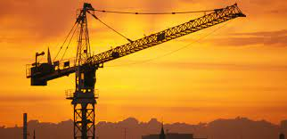
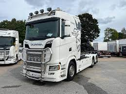
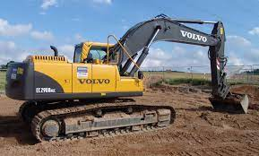

Våra Produkter
Tornkranar

Kranbilarna är från 13 ton/m upp till 70 ton/m och har räckvidd från 10 meter upp till 33 meter,
finns från 2- 4 axlar. Utrustade med gripskopa, pallgafflar,motorsåg och personkorg m m.
Används vid höga lyft eller trånga och svåråtkomlig lossning och lastning. Ett smidigt sätt att få materialet inlyft på tomten.
Våra lastbilar

När du inte nöjer dig med annat än det bästa för livet på vägen.
Volvo FH16 ger dig tillgång till den kraft du behöver för att arbeta effektivt och
en komfort som gör det mindre påfrestande. Den är en branschikon och ett pålitligt
verktyg och är nu bättre än någonsin. Den hanterar dessutom tågvikter upp till 325 ton vid behov
Grävmaskin

Cat 352 Hydraulgrävmaskin med lång räckvidd kombinerar förstklassig prestanda och användarvänlig
teknik med kapacitet för brant lutning som når 19,6m (64fot) och ett grävdjup på 13,04m (43fot).
Kraftigt, högt och brett
underrede med variabel mätare och extra motvikt ger en stabil plattform för grävning med lång räckvidd.